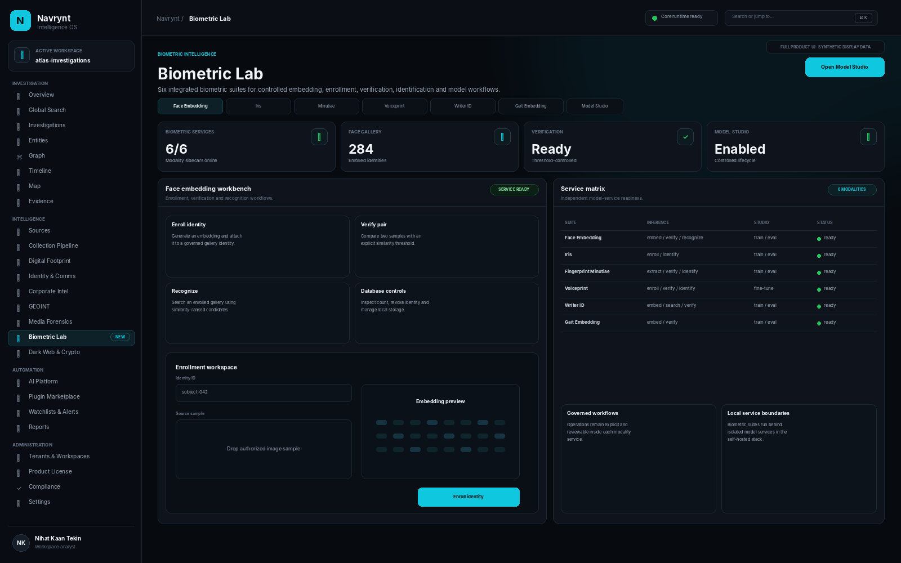

Operational model use
Browser workflows connect to NAVRYNT's unified biometric gateway for supported embedding, enrollment, verification, identification and gallery actions.
Face, iris, fingerprint, voiceprint, writer-ID and gait remain separate model services with their own lawful prerequisites and validation requirements. NAVRYNT connects supported operational workflows through Biometric Workbench and lifecycle workflows through Model Studio.

“Supported” means the code path exists in the included suite. It does not imply that a trained checkpoint, customer dataset or production-accuracy guarantee is bundled.
| Suite | Scratch training | Fine-tune | Direct / pretrained inference | Workbench | Model Studio / lifecycle |
|---|---|---|---|---|---|
| Face Embedding | Yes | Yes | Yes | Embed, verify, recognize, multi-template enroll, gallery count/delete | Train, fine-tune, preprocess, evaluate, DB build, ONNX export |
| Iris | Yes | Yes | Yes | Enroll, top-k identify | Scratch, fine-tune, ArcFace/Triplet metric train, evaluate, benchmark, ONNX export |
| Fingerprint Minutiae | Yes | Yes | Yes + classical no-model mode | Extract, quality, verify, 1:N identify, deep/ONNX runtime load | Scratch, fine-tune, quality CLI, ONNX export |
| Voiceprint | Yes | Yes | Yes | Multi-audio enroll, verify, top-k identify, list/delete enrollments | Scratch, SpeechBrain fine-tune, threshold calibration, ONNX export |
| Writer-ID | Yes | Yes | Yes when valid model assets exist | Batch embed, verify, 1:N search | Scratch/pretrain, fine-tune, hard-negative mining, evaluate, ONNX export |
| Gait Embedding | Yes | Yes | Yes / zero-shot | Sequence embed, verify | Scratch, fine-tune, zero-shot run, CMC/mAP, cross-view eval, visualization, ONNX export |
The split keeps day-to-day biometric workflows separate from privileged model lifecycle operations.
Browser workflows connect to NAVRYNT's unified biometric gateway for supported embedding, enrollment, verification, identification and gallery actions.
Training, fine-tune, evaluation, benchmark and export entrypoints are explicitly whitelisted rather than exposed as unrestricted shell commands.
Persistent working copies can be managed without silently overwriting the original suite configuration.
Checkpoint and model files are constrained to approved modality model roots.
Dataset workspace inputs are surfaced through controlled Model Studio workflows.
Lifecycle execution is a backend-enforced permission boundary, not a front-end-only button restriction.
The source package focuses on code, pipelines, configuration and integration. Customers remain responsible for lawful model/data rights, consent or other lawful basis, calibration and validation for the intended deployment.